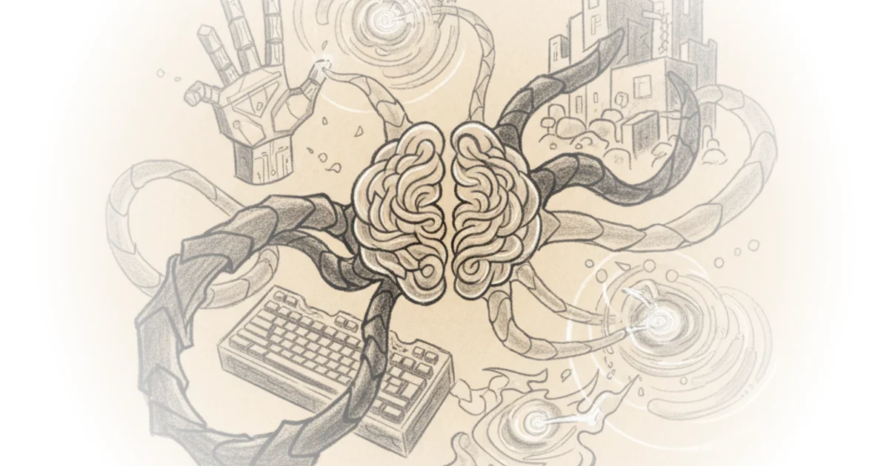

Most people assume that when they choose an AI coding tool, they're comparing intelligence levels — which model is smarter, which one writes better code. That's what the headlines focus on. But that's only half the conversation, and it might be the less important half.
Nate B Jones makes a case that deserves much more attention: the "harness" an AI coding tool uses to interact with your actual work environment is diverging faster than the models themselves, and it's shaping how you work in ways nobody is talking about. The harness isn't just infrastructure. It's a theory of collaboration baked into software — whether your AI remembers what happened yesterday or starts fresh each session, whether it can reach into your project management tools or is sealed off, whether it runs tasks like a team or in isolated rooms with no communication.

Two Architectures, Two Philosophies
Claude Code and Codex aren't just two flavors of the same thing. They embody fundamentally different ideas about how humans and AI should work together.
Anthropic's Claude Code sits in your actual workspace with access to everything on your machine — your terminal, your environment variables, your SSH keys. It builds up memory of your project over time using a two-part pattern: an initializer agent that creates a structured feature list, progress log, and clean commit, followed by a coding agent that makes incremental progress on one feature at a time and leaves structured artifacts for the next session. The progress file and git history become the agent's institutional memory.
OpenAI's Codex works in a sealed room with a copy of your code. It runs tasks in isolated cloud containers where your code is cloned, internet access disabled by default, and the agent works independently. Where Claude Code gives the agent full access to your environment and manages risk through incrementalism and human oversight. Codex constrains the agent's environment and manages risk through isolation and mechanical enforcement.
The Evidence That Changes Everything
One number makes this thesis impossible to ignore. At the AI Engineer Summit in January 2026, Anthropic presented results from a core benchmark testing agents' ability to reproduce published scientific results. The same Claude model scored 78% when running inside Claude Code's harness but only 42% when running inside a different startup's agent harness — nearly double the performance not because of a smarter brain but because of everything surrounding it: how it manages context, hands off state between sessions, connects tools, verifies results.
This isn't marginal difference explained by prompt engineering. It's structural difference explained by the harness.
Where Execution Diverges
Anthropic's position is deliberately "bash is all you need." Claude Code gives the agent access to Unix primitives like grep, git, and npm and lets it chain them together with pipes — a single line of bash can query a database or filter results. This is much cheaper in tokens than writing three separate tools and far more flexible.
OpenAI wired Chrome DevTools protocol directly into Codex at runtime, giving it access to DOM snapshots, screenshots, navigation capabilities so it can reproduce UI bugs and validate fixes by actually driving the application. They also gave every Codex agent its own ephemeral observability stack — Victoria logs and metrics spin up per Git work tree and disappear when the work is done.
One gives the agent your hands full access to your actual environment, composable, powerful, and exactly as dangerous as that sounds. The other builds custom hands in a controlled room which is safer by default but less able to reach the tools you already use.
What This Means For Your Workflow
Calvin French Owen, who helped launch Codex and now uses both tools extensively, describes the practical result: he picks his coding agent as a function of how much time he has and how long he wants it to run autonomously. He uses Claude Code for planning, orchestrating his terminal, explaining parts of the codebase — Opus will spin up subagents simultaneously, delegate exploration to fast Haiku instances, and is more creative in terms of suggesting things the developer forgot to mention. Codex is for actual code because the Codex code just straight up has fewer bugs.
So he starts with Claude Code and keeps it open then flips to Codex when he's ready to implement. Every so often he has Codex review Claude's work and it catches mistakes that Claude missed.
Critics might note that this comparison focuses on two specific tools and may not represent the broader landscape of AI coding options — there are many other approaches being developed simultaneously that could prove equally valid or more effective over time. The benchmark evidence cited comes from a single source, which limits how broadly we can apply these findings.
The harness determines whether the model's intelligence actually translates into useful work.
The strongest part of Jones's argument is that he's identified something real — the architectural choices between Claude Code and Codex aren't just implementation details but fundamental theories of collaboration baked into software. His biggest vulnerability is that this analysis focuses on two specific tools when many other approaches are emerging, and the benchmark data cited represents a single source rather than broader validation. Watch for how these tool makers evolve their architectures over the next year — that's where the real story will be.